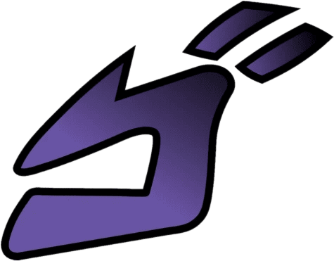

Introducción a la Serie
"JoJo's Bizarre Adventure" es una serie de manga escrita e ilustrada por Hirohiko Araki. Publicada originalmente
en Weekly Shōnen Jump de Shueisha desde 1987 hasta 2004, fue transferida a Ultra Jump en 2005. La serie está
dividida en nueve arcos argumentales, cada uno siguiendo a un nuevo protagonista que lleva el apodo de "JoJo".
Reconocida como la serie de manga en curso más extensa de Shueisha, "JoJo's Bizarre Adventure" cuenta con 134
volúmenes tankōbon hasta abril de 2024. Además, ha sido adaptada en una exitosa serie de anime producida por
David Production y Warner Bros. La obra abarca géneros como acción, aventura, lo sobrenatural, suspenso,
comedia, tragedia, misterio y terror, creando una experiencia narrativa rica y variada. Con su innovadora
estructura y profunda temática, "JoJo's Bizarre Adventure" se ha consolidado como una obra maestra en el mundo
del manga y el anime.
Trama Principal
La narrativa se centra en una maldición que persigue a la familia Joestar a lo largo de más de 120 años. A
través de diversas generaciones, los descendientes directos e indirectos de los protagonistas enfrentan los
problemas y desafíos que surgen de su linaje maldito, explorando temas como el destino y la lucha contra el
mal.
Orígenes
La serie fue anunciada por primera vez el 5 de julio de 2012 durante la conferencia de prensa de
Hirohiko Araki, en el marco de la JoJo Exhibition 2012. Este anuncio coincidió con el 25 aniversario del
manga. Originalmente, el título se refería únicamente a la primera temporada, que adapta las historias
de "Phantom Blood" y "Battle Tendency". Sin embargo, con el tiempo se expandió para incluir las
temporadas posteriores.
La serie se divide en dos continuidades principales. A continuación, se detallan las partes de la
primera continuidad, que abarcan desde la Parte 1 hasta la Parte 6, cada una con su propia historia y
personajes únicos, pero todas conectadas por el tema central de la maldición familiar.